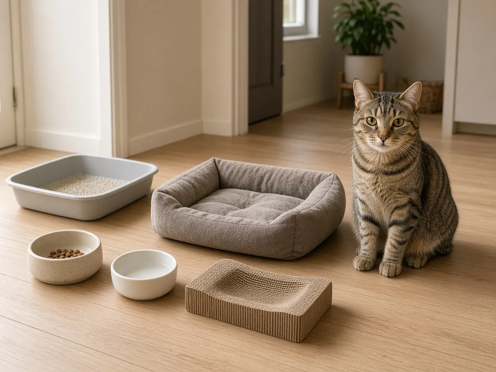

Budget : équiper un chat d’appartement en connecté (kit débutant)

Fontaine, distributeur, caméra, litière automatique, GPS… Tout acheter d’un coup coûte cher et n’est pas nécessaire. Ce guide t’aide à prioriser selon ton mode de vie et ton budget, en commençant par ce qui apporte le plus au chat. Nous n’affichons pas de prix précis, car ils changent souvent : vérifie-les sur la page du vendeur.
La règle : d’abord le chat, ensuite les gadgets
Avant tout objet connecté, un chat d’intérieur a besoin d’un arbre à chat ou d’espaces en hauteur, de griffoirs, de jeux quotidiens avec toi et d’une litière propre. Le connecté vient en plus, pour te faciliter la vie quand tu es absent. Notre checklist équipement chat d’appartement liste cette base indispensable.
Niveau 1 : Kit débutant (petit budget)
Les deux objets qui ont l’impact le plus direct sur le quotidien du chat :
Une fontaine à eau
Elle incite beaucoup de chats à boire davantage. Un modèle simple non connecté suffit pour commencer ; la version connectée ajoute des alertes de niveau d’eau. Voir notre guide des fontaines.
Voir sur Amazon : fontainesUn distributeur de croquettes programmable
Pour des repas réguliers en petites portions, même quand tu rentres tard. Prends un modèle avec batterie de secours. Voir notre guide des distributeurs.
Voir sur Amazon : distributeursNiveau 2 : Confort (budget moyen)
Ajoute de quoi garder un œil sur le chat et le retrouver :
Une caméra intérieure
Une caméra motorisée avec carte microSD, sans abonnement, couvre l’essentiel. Voir notre guide des caméras pour chat.
Voir sur Amazon : camérasUn traceur sans abonnement
Un AirTag ou un équivalent Android sur un collier de sécurité sert de filet de sécurité pour un chat d’intérieur. Voir GPS chat sans abonnement.
Voir sur Amazon : porte-AirTagNiveau 3 : Équipement complet (gros budget)
Une litière automatique
C’est l’investissement le plus lourd, et celui qui change le plus le quotidien en appartement (odeurs, corvée). À réserver quand le reste est en place et que tu as mesuré l’emplacement. Voir notre sélection 2026 et notre guide litière auto en petit appartement.
Voir sur Amazon : litières automatiquesUn vrai GPS avec abonnement
Seulement si ton chat sort ou a déjà fugué. Compare dans Tractive vs AirTag.
Voir sur AmazonKit par profil
| Ta situation | Priorité | Ensuite |
|---|---|---|
| Longues journées de travail | Distributeur + fontaine | Caméra |
| Studio, odeurs de litière | Litière automatique compacte | Fontaine |
| Week-ends fréquents à l’extérieur | Distributeur avec batterie + fontaine grande capacité | Caméra, et quelqu’un qui passe |
| Balcon ou chat fugueur | Filet de balcon + identification à jour | Traceur (Bluetooth ou GPS) |
| Premier chat, budget serré | Fontaine simple | Distributeur programmable |
Économiser intelligemment
- Reste dans un seul écosystème (par exemple PetKit ou Xiaomi) : une seule application, et souvent des promotions groupées.
- Calcule le coût d’usage : filtres de fontaine, sacs et désodorisants de litière, abonnement GPS ou cloud caméra. Sur deux ou trois ans, il peut dépasser le prix d’achat.
- Évite les abonnements inutiles : préfère une caméra avec stockage local et ne paye un abonnement GPS que si le chat sort.
- Surveille les grandes périodes de promotions (Black Friday, Prime Day, soldes) pour les achats les plus chers comme la litière automatique.
Ce qui est rarement utile
Les jouets laser automatiques peuvent frustrer certains chats (une proie qu’on n’attrape jamais) : termine toujours une séance par un jouet qu’il peut attraper. Les colliers « d’activité » sans localisation intéressent surtout les curieux. Et aucun objet ne remplace une visite quand tu pars plus d’un week-end.
Notre avis
Commence par une fontaine et un distributeur programmable, ajoute une caméra sans abonnement si tu es souvent absent, et garde la litière automatique pour quand tu seras sûr de ton emplacement et de ton budget.
Liens affiliés Amazon : une commission peut être versée, sans surcoût pour toi.